Robot Espacial
Crea y controla tu robot explorador
Un semestre completo de exploración espacial: del primer circuito al robot controlado remotamente por Wi-Fi, con piezas propias modeladas en Tinkercad.

Robot Espacial lleva la lógica de las misiones a un formato semestral, con más tiempo para profundizar en cada capa técnica. Los estudiantes empiezan por entender las problemáticas reales de los viajes espaciales y terminan con un robot explorador que programan y controlan de forma remota a través de Wi-Fi.
La progresión es deliberada: primero la metodología de diseño para abordar problemas complejos, después electrónica, después programación, y solo entonces el modelado 3D de las piezas que cada robot necesita. Cada capa se evalúa antes de montar la siguiente.
El curso usa el mismo robot educativo de base, lo que permite dedicar el tiempo de clase a diseñar y resolver en vez de a pelear con hardware que no funciona.
Curso de creación propia
Propuesta, programa, metodología y material diseñados por mí.
Sobre el robot educativo
Tercer curso construido sobre el robot que creamos con Elvis Andrade para Robots Makers en Acción.
Temario
- 01Introducción a la exploración espacialProblemáticas reales de los viajes espaciales como punto de partida.
- 02Metodología de diseñoCómo abordar problemas complejos desde la creación de prototipos.
- 03Fundamentos de electrónica básicaCircuitos, componentes y primeras conexiones.
- 04Introducción a la programaciónEstructura del código y control de los primeros movimientos.
- 05Preparación de la evaluación intermediaInstrucciones, rúbrica y organización de los equipos.
- 06Evaluación intermediaPropuestas frente a las problemáticas de los viajes espaciales.
- 07Introducción al modelado 3DTinkercad aplicado a las piezas que necesita cada robot.
- 08Programación del robotControl de motores y comunicación por Wi-Fi.
- 09Pruebas finales y optimizaciónAjuste del comportamiento del robot en recorridos de prueba.
- 10Preparación de la evaluación finalMaterial de presentación y ensayo.
- 11Evaluación final y feria de aprendizajesMuestra de los robots terminados.
- 12Retroalimentación finalCierre y reflexión sobre el proceso del semestre.
Registro
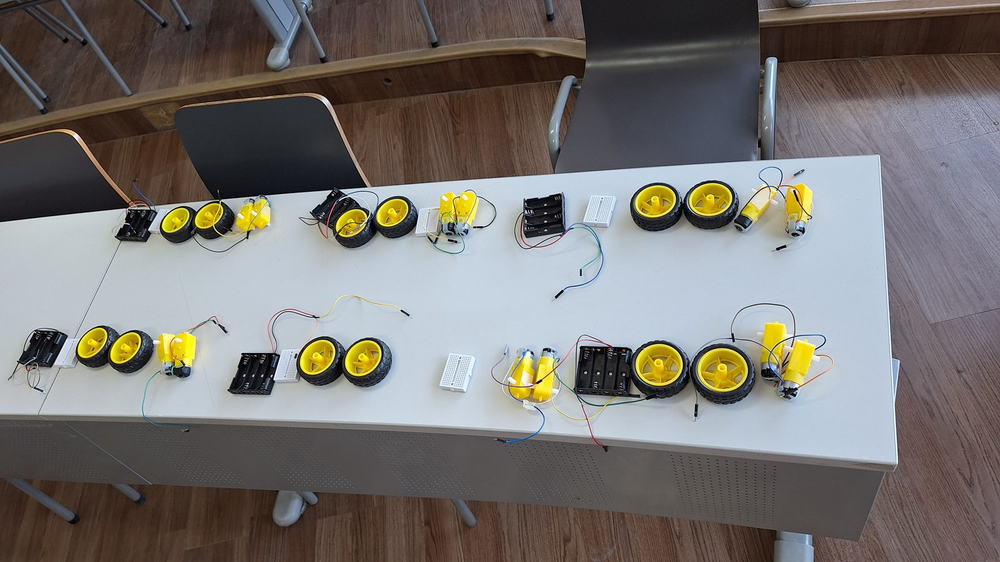
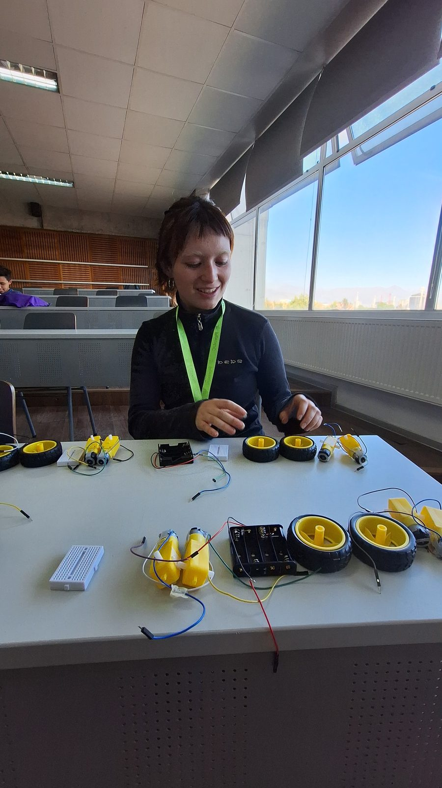
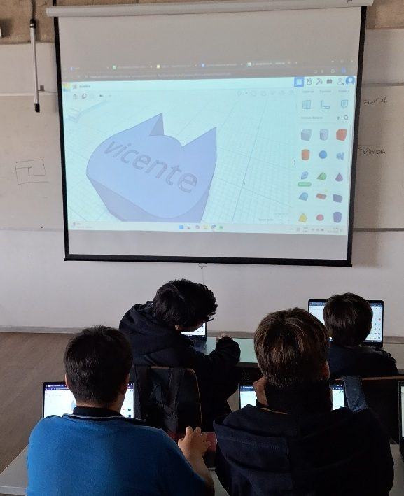
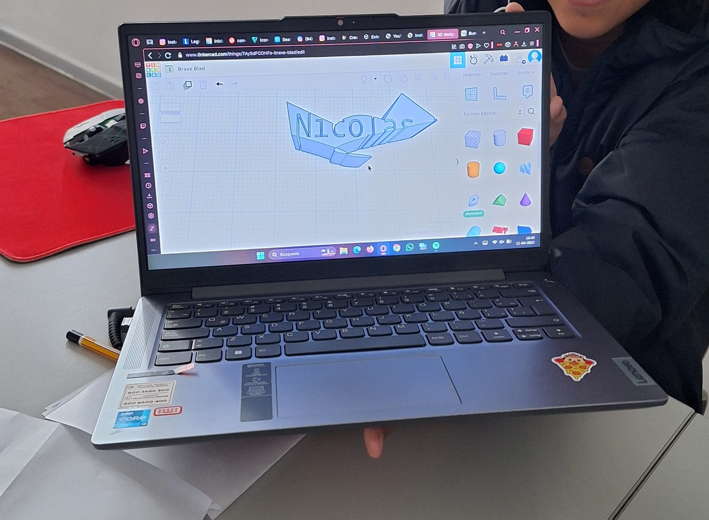
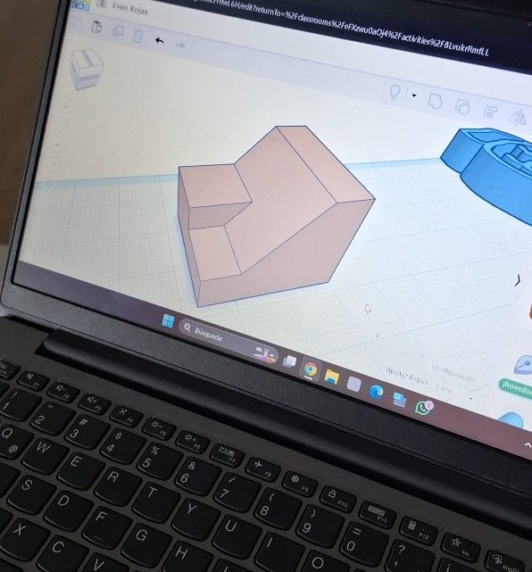
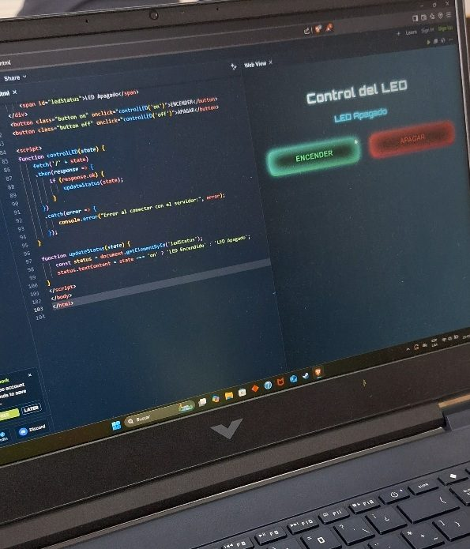
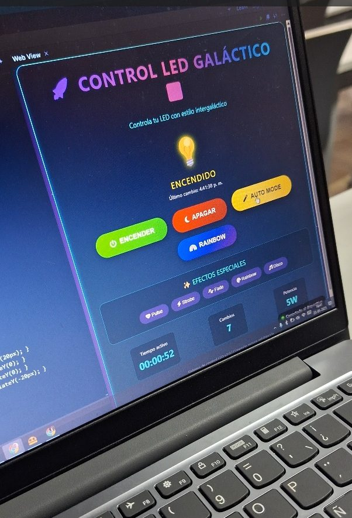
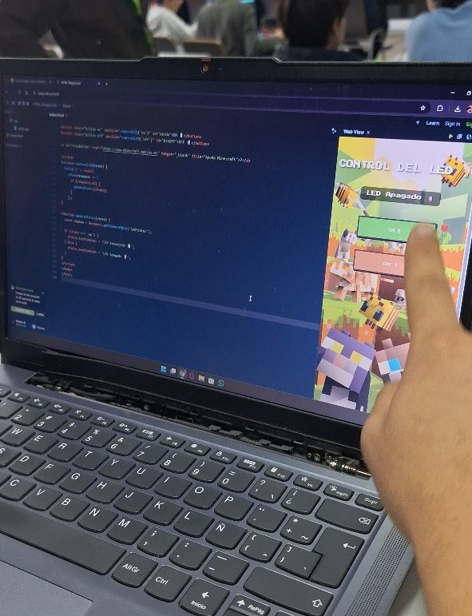
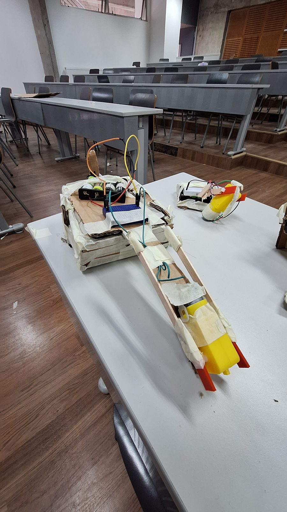
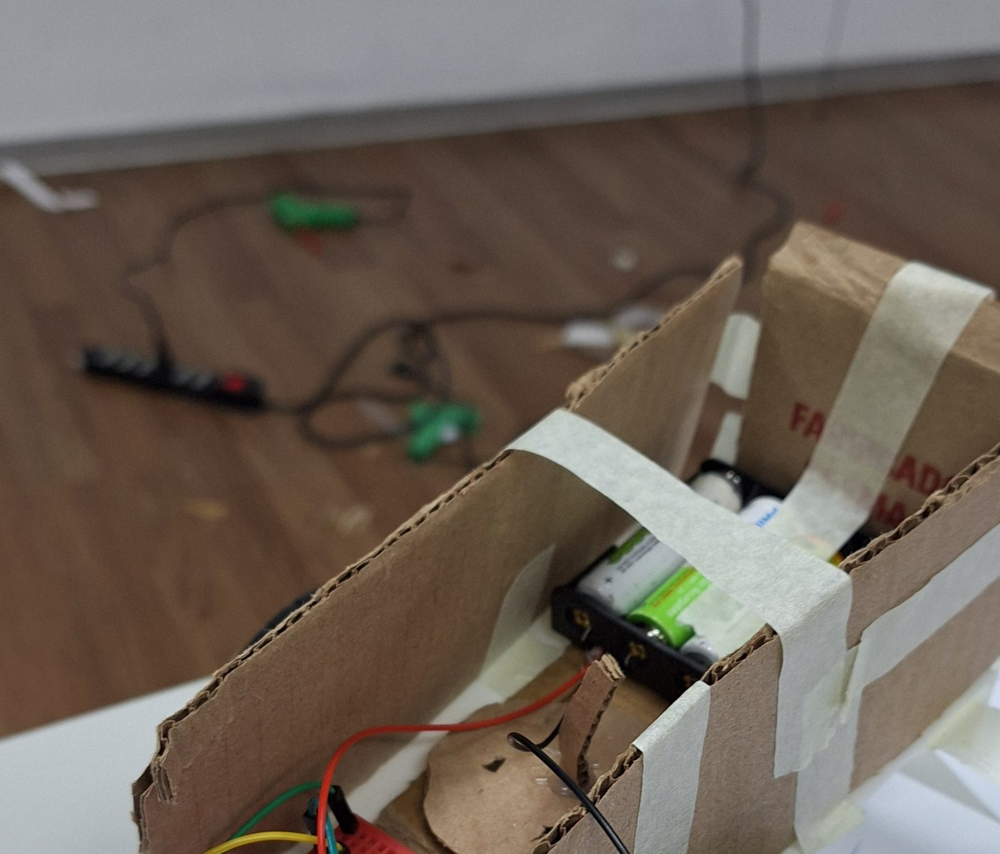
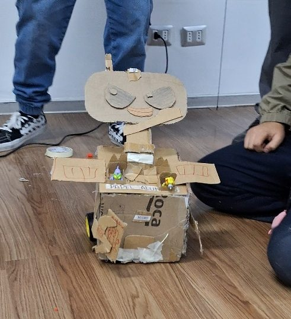
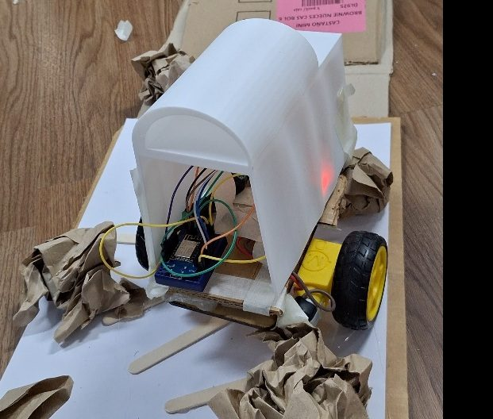
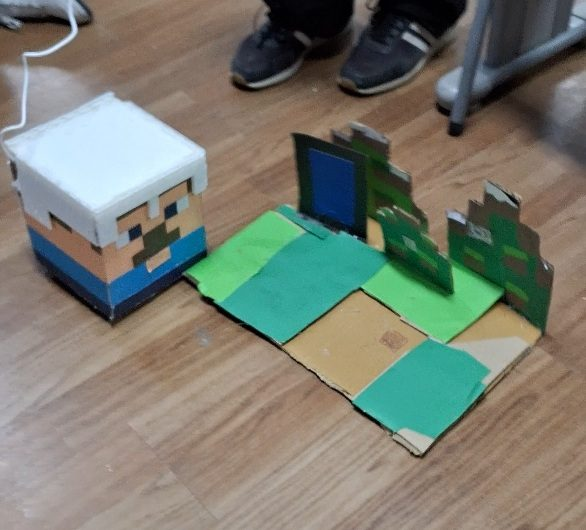
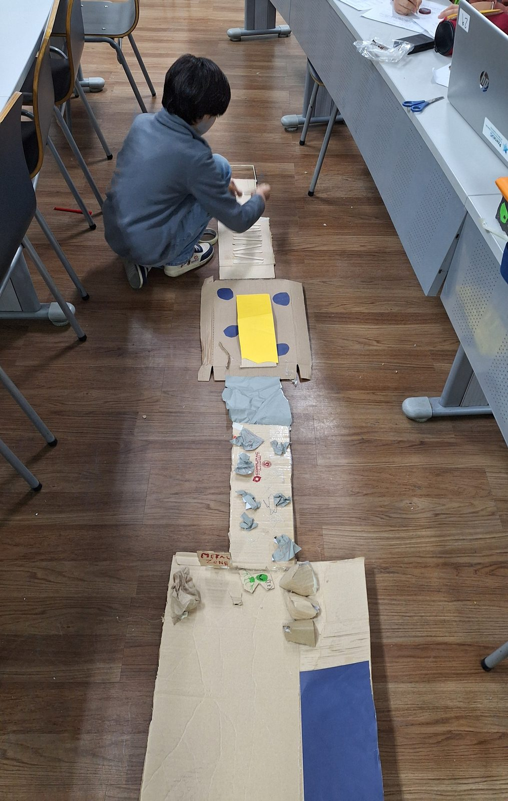